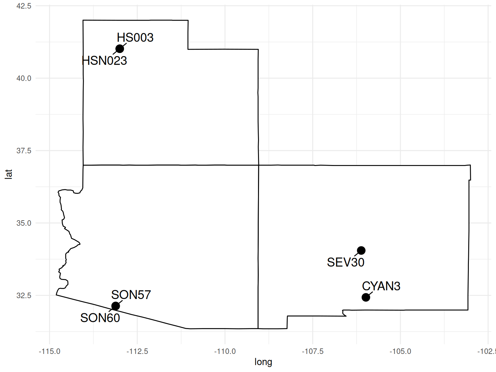
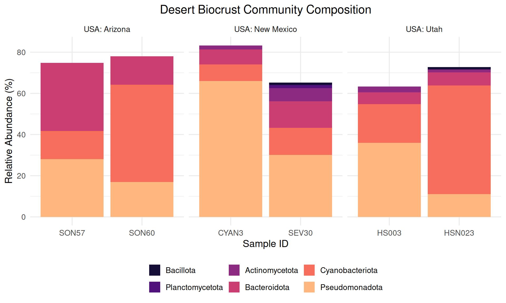
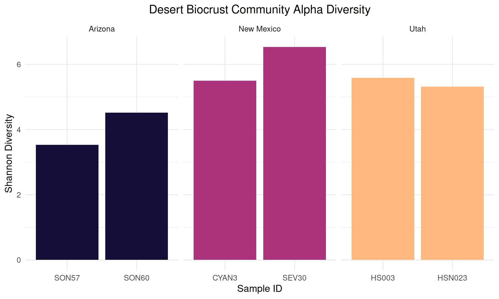
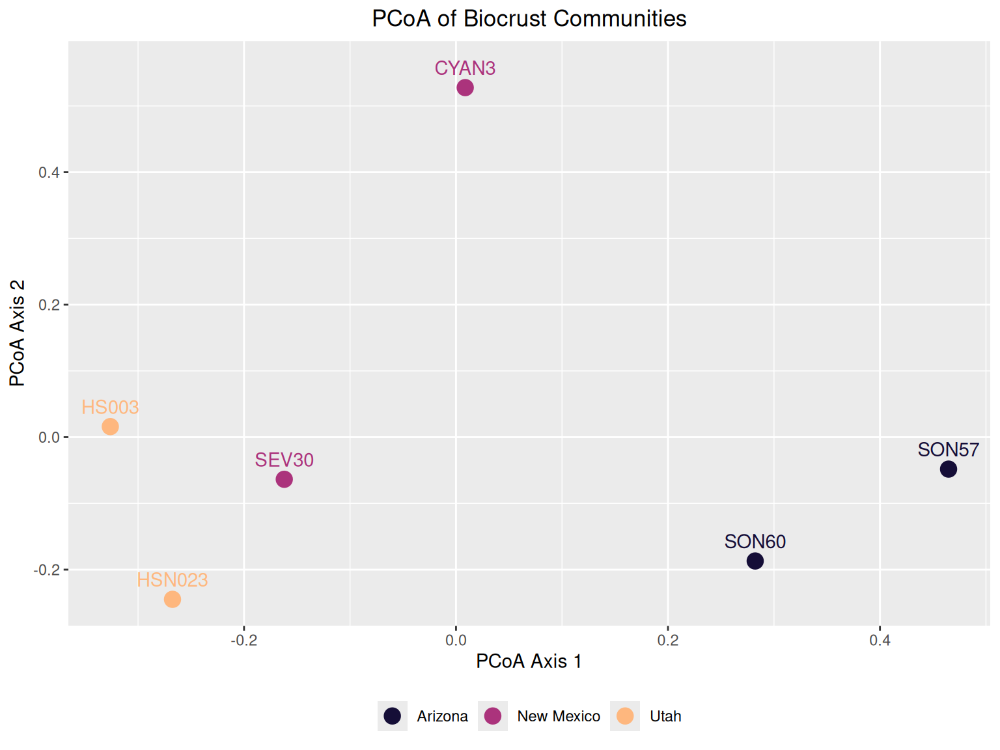
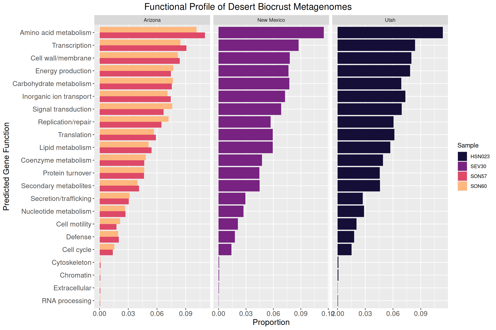

Metagenomics of Desert Biocrusts
Community Composition Across the American Southwest
Introduction
Biological soil crusts (biocrusts) are communities of living organisms that form matrix on the soil surface, binding soil particles together in a mat-like structure. They are found primarily in arid and semi-arid environments and are estimated to cover roughly 12% of Earth’s land surface (Rodriguez-Caballero et al., 2022).
Biocrusts play a key ecological role in desert ecosystems. The organisms within them carry out key biological functions, including nitrogen and carbon fixation. They also influence the physical properties of the soil, affecting albedo, surface stabilization, and the retention of water and nutrients. These crusts, while playing such an important role, are also fragile can be easily damaged by grazing, fire, and human activity and take a long time to heal.
This project uses shotgun metagenomic sequencing to examine the bacterial, fungal, and viral communities of desert biocrusts across three sites in the American Southwest: Utah, New Mexico, and Arizona.
Data
I was ablr to find Six PacBio HiFi metagenome samples of biocrust from the NCBI Sequence Read Archive (SRA). I norrowed it down to that there were two samples per state: Utah (HS003, HSN023), New Mexico (CYAN3, SEV30), and Arizona (SON57, SON60). Sample metadata was retrieved using the rentrez R package to query the SRA and BioSample databases. Raw reads were downloaded using prefetch and fastq-dump from the SRA Toolkit.
After downloading all the Raw reads, they were filtered using chopper with a minimum quality score of 20 and a minimum read length of 1,000 bp. Less than 500 reads per sample were removed, so we have very high quality data.
# Stream decompress -> filter -> recompress
pigz -dc sample.fastq.gz | chopper -q 20 -l 1000 | pigz > sample_QC.fastq.gzIn order to find out what kind of organisms are living in the biocrust commuiniets, we used a program called Kraken2. Kraken2 takes the reads that we have and maps them against a database so we can identify them. For this analysis, we used the PlusPF-8 database, which includes bacterial, archaeal, viral, fungal, and protozoan reference sequences.
# Classify reads against PlusPF-8 database
kraken2 --db ~/databases/k2_pluspf_08gb \
--threads 8 \
--output sample.out \
--report sample.report \
sample_QC.fastq.gzAfter getting the results back, we were able to look at them using R and plot what we found
# Read in metadata
meta_data <- read.csv("data/metadata/biocrust_metadata.csv")
# Read all Kraken2 reports into one data frame
master_kraken2_data <- list.files("data/kraken2/reports", full.names = TRUE) %>%
map_dfr(function(f) {
srr_num <- basename(gsub(".report", "", f))
read_tsv(f, col_names = c("pct", "reads_clade", "reads_direct", "rank", "taxid", "name")) %>%
mutate(name = str_trim(name), srr = srr_num)
})
# Join with metadata and extract sample names
master_kraken2_data <- master_kraken2_data %>%
left_join(meta_data, by = "srr") %>%
mutate(sample = str_extract(.data$title, "(?<=- ).*"))# Filter to phylum level, at least 1% abundance
phylum_data <- master_kraken2_data %>%
filter(rank == "P", pct > 1) %>%
select(sample, name, pct, geo_loc_name)
# Community composition barplot
ggplot(phylum_data, aes(x = sample, y = pct, fill = fct_reorder(name, pct))) +
geom_col() +
facet_wrap(~ geo_loc_name, scales = "free_x") +
scale_fill_viridis_d(option = "A", begin = 0.1, end = 0.85) +
labs(
title = "Desert Biocrust Community Composition",
x = "Sample ID",
y = "Relative Abundance (%)",
fill = NULL
) +
theme_minimal(base_size = 14) +
theme(legend.position = "bottom",
plot.title = element_text(hjust = 0.5)) +
guides(fill = guide_legend(nrow = 2))
Diversity
To understand how diverse each community is and how they compare to each other, we calculated alpha and beta diversity metrics using the vegan package.
Alpha diversity measures the diversity within a single sample — how many different species are there and how evenly are they distributed? We used the Shannon diversity index, which accounts for both richness (number of species) and evenness (how balanced their abundances are). A higher Shannon index means a more diverse community.
library(vegan)
# Get species-level counts with a minimum of 10 reads
species_count <- master_kraken2_data %>%
filter(rank == "S", reads_direct > 10) %>%
select(geo_loc_name, sample, name, reads_direct)
# Pivot to species-by-sample matrix for vegan
vegan_species_data <- species_count %>%
pivot_wider(names_from = name, values_from = reads_direct)
sample_info <- vegan_species_data %>%
select(sample, geo_loc_name) %>%
mutate(geo_loc_name = str_replace(geo_loc_name, "USA: ", ""))
vegan_matrix <- vegan_species_data %>%
select(-sample, -geo_loc_name)
vegan_matrix[is.na(vegan_matrix)] <- 0
# Calculate Shannon diversity
sample_info$shannon <- diversity(vegan_matrix, index = "shannon")
# Plot alpha diversity
ggplot(sample_info, aes(x = sample, y = shannon, fill = geo_loc_name)) +
geom_col() +
facet_wrap(~ geo_loc_name, scales = "free_x") +
scale_fill_viridis_d(option = "A", begin = 0.1, end = 0.85) +
labs(
title = "Desert Biocrust Community Alpha Diversity",
x = "Sample ID",
y = "Shannon Diversity"
) +
theme_minimal(base_size = 14) +
theme(legend.position = "none",
plot.title = element_text(hjust = 0.5))
Beta diversity measures how different communities are between samples. We calculated Bray-Curtis dissimilarity and used PCoA (Principal Coordinates Analysis) to visualize the relationships. Samples that are closer together on the plot have more similar communities.
# Calculate Bray-Curtis distance and run PCoA
bray_dist <- vegdist(vegan_matrix, method = "bray")
pcoa <- cmdscale(bray_dist, k = 2)
pcoa_df <- data.frame(
pcoa,
sample = sample_info$sample,
geo_loc_name = sample_info$geo_loc_name
)
# Plot PCoA
ggplot(pcoa_df, aes(x = X1, y = X2, color = geo_loc_name)) +
geom_point(size = 4) +
geom_text(aes(label = sample), nudge_y = 0.03) +
labs(
title = "PCoA of Biocrust Communities",
x = "PCoA Axis 1",
y = "PCoA Axis 2",
color = NULL) +
scale_color_viridis_d(option = "A", begin = 0.1, end = 0.85) +
theme(legend.position = "bottom",
plot.title = element_text(hjust = 0.5)) +
guides(color = guide_legend(title = NULL, nrow = 1))
Assembly
With the QC’d reads in hand, we assembled each sample individually using metaMDBG, a Rust-based long-read metagenome assembler. It’s designed specifically for HiFi reads and is incredibly memory-efficient — all six assemblies peaked at under 4.3 GB of RAM.
# Assemble each sample individually with metaMDBG
for file in data/reads/QC/*.fastq.gz; do
base=$(basename "$file" _QC.fastq.gz)
metaMDBG asm --out-dir "data/assemblies/$base" --in-hifi "$file" --threads 6
doneThe assemblies came out looking great. N50 values ranged from 2.2 to 4.1 Mb, meaning half of the total assembly length is in contigs larger than that. For reference, a typical bacterial genome is 2-8 Mb, so many of our contigs are genome-scale. We also recovered between 8 and 26 circular contigs larger than 1 Mb per sample — these are likely complete bacterial chromosomes assembled end-to-end.
Gene Annotation
To figure out what the organisms in our biocrusts are actually doing, we predicted genes on the assembled contigs using Prodigal in metagenomic mode, then annotated them with eggNOG-mapper.
Prodigal scans the contigs for open reading frames and predicts protein-coding genes. The -p meta flag tells it to use pre-built models for metagenomic data, since our contigs come from many different organisms with different codon usage patterns.
# Predict genes with Prodigal
pigz -dc contigs.fasta.gz | prodigal -p meta -i /dev/stdin \
-a proteins.faa \
-o genes.gff \
-f gffWe then ran eggNOG-mapper on the predicted proteins, which uses DIAMOND to search against the eggNOG protein database and assigns functional annotations including COG categories, KEGG pathways, and protein family domains.
# Annotate predicted proteins with eggNOG-mapper
emapper.py -i proteins.faa \
--output sample_name \
--output_dir output/dir/ \
--data_dir ~/databases/eggnog_db \
-m diamond \
--cpu 8library(viridis)
# Read in all eggNOG annotation files
eggnog_data <- list.files("data/gene_annotation/eggNOG-mapper_output",
pattern = "*.emapper.annotations",
recursive = TRUE, full.names = TRUE) %>%
map_dfr(function(f) {
srr <- basename(f) %>% gsub(".emapper.annotations", "", .)
read_tsv(f, comment = "##") %>%
mutate(srr = srr)
})
# Join with metadata
eggnog_data <- eggnog_data %>%
left_join(meta_data, by = "srr")
# Filter, split multi-letter COG codes, and add descriptions
cog_names <- c(
J = "Translation", A = "RNA processing", K = "Transcription",
L = "Replication/repair", B = "Chromatin",
D = "Cell cycle", V = "Defense", T = "Signal transduction",
M = "Cell wall/membrane", N = "Cell motility", U = "Secretion/trafficking",
O = "Protein turnover", W = "Extracellular", Z = "Cytoskeleton",
C = "Energy production", G = "Carbohydrate metabolism",
E = "Amino acid metabolism", F = "Nucleotide metabolism",
H = "Coenzyme metabolism", I = "Lipid metabolism",
P = "Inorganic ion transport", Q = "Secondary metabolites"
)
COG_data <- eggnog_data %>%
mutate(sample = str_extract(.data$title, "(?<=- ).*"),
geo_loc_name = gsub("USA: ", "", geo_loc_name)) %>%
select(`#query`, COG_category, evalue, sample, geo_loc_name) %>%
filter(evalue < 1e-5) %>%
filter(COG_category != "-") %>%
separate_longer_position(COG_category, width = 1) %>%
filter(!COG_category %in% c("S", "R", "Y")) %>%
mutate(COG_description = cog_names[COG_category])
# Normalize to proportions within each sample
COG_proportions <- COG_data %>%
group_by(sample) %>%
mutate(total = n()) %>%
ungroup() %>%
group_by(sample, COG_description, geo_loc_name) %>%
summarize(proportion = n() / first(total), .groups = "drop")ggplot(COG_proportions, aes(x = reorder(COG_description, proportion), y = proportion, fill = sample)) +
geom_col(position = "dodge") +
coord_flip() +
facet_wrap(~geo_loc_name, scales = "free_x") +
scale_fill_viridis_d(option = "A", begin = 0.1, end = 0.85) +
labs(
title = "Functional Profile of Desert Biocrust Metagenomes",
x = "Predicted Gene Function",
y = "Proportion",
fill = "Sample") +
theme(
plot.title = element_text(size = 16, hjust = .5),
axis.text = element_text(size = 12),
axis.title = element_text(size = 14),
plot.title.position = "plot"
)
Analysis Pipeline
flowchart TD
A[Raw PacBio HiFi Reads] --> B[chopper - Read QC]
B --> C[Kraken2 on Reads - Community Composition]
B --> D[metaMDBG - Assembly]
C --> C1[Alpha & Beta Diversity]
D --> E[Prodigal - Gene Prediction]
E --> F[eggNOG-mapper - Functional Annotation]
D --> G[Kraken2 on Contigs - Contig Taxonomy]
D --> H[seqkit - Extract Circular Contigs]
H --> I[geNomad - Classification]
I --> J[Chromosomes]
I --> K[Viruses]
I --> L[Plasmids]
J --> M[Bakta - Genome Annotation]
M --> N[LoVis4u / gggenes - Visualization]
K --> O[CheckV - Quality Assessment]
O --> P[Pharokka - Phage Annotation]
L --> Q[Prodigal + eggNOG - Plasmid Functions]
Q --> Q2[Plasmid vs Chromosome Function Comparison]
F --> R[COG Functional Profiles]
G --> S[Taxonomy-Function Linkage]
F --> S
P --> T[Visualize with gggenes / LoVis4u]
Q --> T